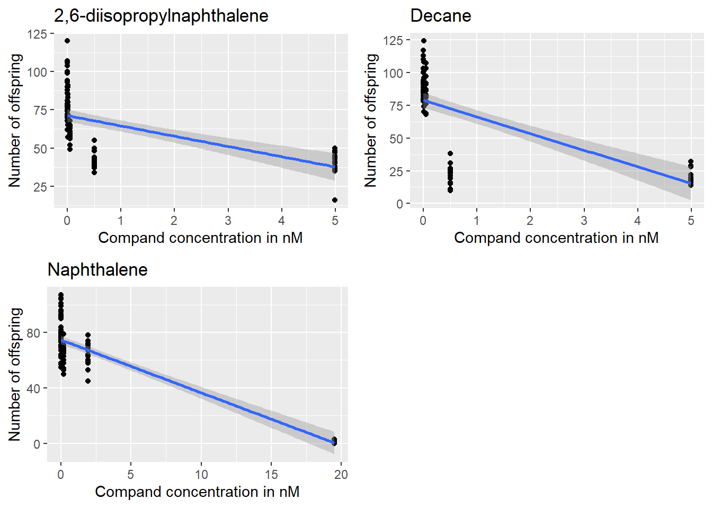
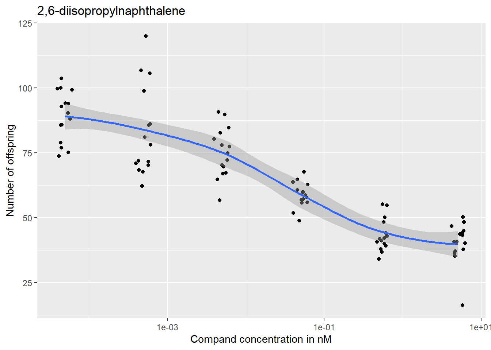
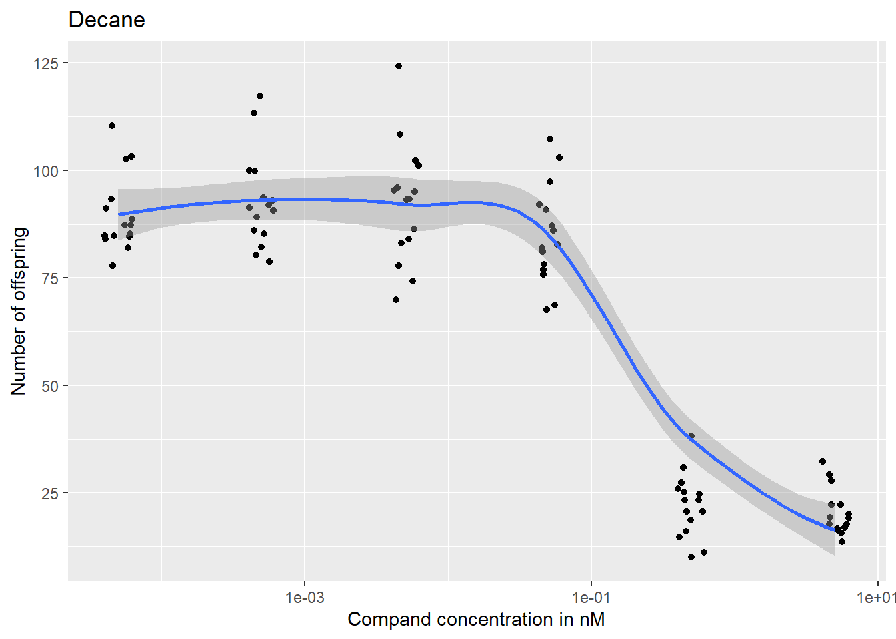
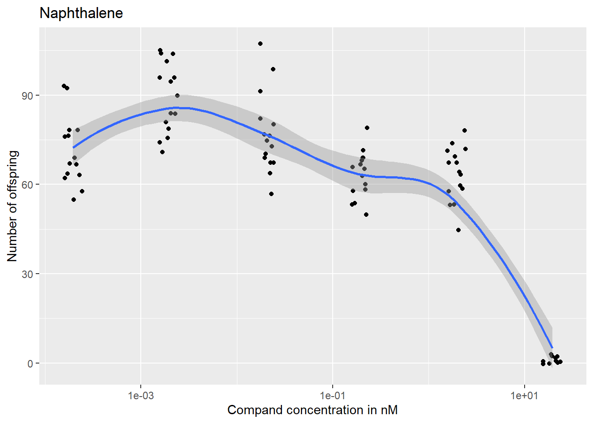

2 C. elegans plate experiment
The data used in this report comes from a experiment where C. elegans was exposed to varying concentrations of three different compounds: 2,6-diisopropylnaphthalene, decane and naphthalene. After an incubation period the number of offspring where counted.
library(tidyverse) # 1.3.1
library(readxl) #1.3.1
library(here) #1.0.1
library(drc) #3.0-1
library(knitr) #1.33
library(ggpubr) # 0.4.0
library(captioner) #2.2.3.900
library(kableExtra) #1.3.4#first excel sheet is read
ce_data <- readxl::read_xlsx(here("data/CE.LIQ.FLOW.062_Tidydata.xlsx"))
names(ce_data)## [1] "plateRow" "plateColumn" "vialNr" "dropCode" "expType"
## [6] "expReplicate" "expName" "expDate" "expResearcher" "expTime"
## [11] "expUnit" "expVolumeCounted" "RawData" "compCASRN" "compName"
## [16] "compConcentration" "compUnit" "compDelivery" "compVehicle" "elegansStrain"
## [21] "elegansInput" "bacterialStrain" "bacterialTreatment" "bacterialOD600" "bacterialConcX"
## [26] "bacterialVolume" "bacterialVolUnit" "incubationVial" "incubationVolume" "incubationUnit"
## [31] "incubationMethod" "incubationRPM" "bubble" "incubateTemperature"The Excel file contains a lot of data not necessary for this report. The variable used in this report are:
- expType: Experiment type
- RawData: Number of offspring
- compName: Compound name
- compConcentration: Compound concentration
- compUnit: Unit of measurement
#getting rid of unnecessary columns
ce_data <- dplyr::select(ce_data, c("expType", "RawData", "compName", "compConcentration", "compUnit"))Table 1: the first 10 rows of the trimmed C. elegans data
| expType | RawData | compName | compConcentration | compUnit |
|---|---|---|---|---|
| experiment | 44 | 2,6-diisopropylnaphthalene | 4.99 | nM |
| experiment | 37 | 2,6-diisopropylnaphthalene | 4.99 | nM |
| experiment | 45 | 2,6-diisopropylnaphthalene | 4.99 | nM |
| experiment | 47 | 2,6-diisopropylnaphthalene | 4.99 | nM |
| experiment | 41 | 2,6-diisopropylnaphthalene | 4.99 | nM |
| experiment | 35 | 2,6-diisopropylnaphthalene | 4.99 | nM |
| experiment | 41 | 2,6-diisopropylnaphthalene | 4.99 | nM |
| experiment | 36 | 2,6-diisopropylnaphthalene | 4.99 | nM |
| experiment | 40 | 2,6-diisopropylnaphthalene | 4.99 | nM |
| experiment | 38 | 2,6-diisopropylnaphthalene | 4.99 | nM |
#Certain columns where missclassed by read_xlsx(), correcting:
ce_data$compConcentration <- as.numeric(ce_data$compConcentration)
ce_data$compName <- as_factor(ce_data$compName)The compound were tested at different concentration gradients per compound. A decrease in offspring count can be seen with the increase of each compounds concentration
iso <- ce_data %>%
dplyr::filter(compName == "2,6-diisopropylnaphthalene") %>%
ggplot2::ggplot(aes(x = compConcentration, y = RawData)) +
ggplot2::geom_point() +
ggplot2::geom_smooth(method = "lm") +
ggplot2::labs(x = "Compand concentration in nM",
y = "Number of offspring",
title = "2,6-diisopropylnaphthalene")
decane <- ce_data %>%
dplyr::filter(compName == "decane") %>%
ggplot2::ggplot(aes(x = compConcentration, y = RawData)) +
ggplot2::geom_point() +
ggplot2::geom_smooth(method = "lm") +
ggplot2::labs(x = "Compand concentration in nM",
y = "Number of offspring",
title = "Decane")
naph <- ce_data %>%
dplyr::filter(compName == "naphthalene") %>%
ggplot2::ggplot(aes(x = compConcentration, y = RawData)) +
ggplot2::geom_point() +
ggplot2::geom_smooth(method = "lm") +
ggplot2::labs(x = "Compand concentration in nM",
y = "Number of offspring",
title = "Naphthalene")ggarrange(iso, decane, naph)
Figure 1: The effect of the compounds on the number of C. elegans offspring.
However the experiment was designed with the creation of a dose-response curve in mind. So the compound concentration is on a logarithmic scale.
#removed geom_smooth linear method
iso <- ce_data %>%
dplyr::filter(compName == "2,6-diisopropylnaphthalene" | compName == "S-medium") %>%
ggplot2::ggplot(aes(x = compConcentration, y = RawData)) +
ggplot2::geom_jitter(width = 0.1) +
ggplot2::geom_smooth() +
ggplot2::labs(x = "Compand concentration in nM",
y = "Number of offspring",
title = "2,6-diisopropylnaphthalene")
decane <- ce_data %>%
dplyr::filter(compName == "decane" | compName == "S-medium") %>%
ggplot2::ggplot(aes(x = compConcentration, y = RawData)) +
ggplot2::geom_jitter(width = 0.1) +
ggplot2::geom_smooth() +
ggplot2::labs(x = "Compand concentration in nM",
y = "Number of offspring",
title = "Decane")
naph <- ce_data %>%
dplyr::filter(compName == "naphthalene" | compName == "S-medium") %>%
ggplot2::ggplot(aes(x = compConcentration, y = RawData)) +
ggplot2::geom_jitter(width = 0.1) +
ggplot2::geom_smooth() +
ggplot2::labs(x = "Compand concentration in nM",
y = "Number of offspring",
title = "Naphthalene")iso + ggplot2::scale_x_log10() Figure 2: The effect of 2,6-diisopropylnaphthalene on the number of offspring of C. elegans. The X-axis is logmarithmicly scaled
decane + ggplot2::scale_x_log10() Figure 3: The effect of decane on the number of offspring of C. elegans. The X-axis is logmarithmicly scaled
naph + ggplot2::scale_x_log10() Figure 4: The effect of naphthalene on the number of offspring of C. elegans. The X-axis is logmarithmicly scaled
Figure 2, Figure 3 and Figure 4 are supposed to resemble dose response curves, however geom_smooth method of applying a curve to the data points isn’t meant for creating a dose response curve. A package which is meant for this is {drc}.
The model to be fitted to the response data will be a four parameter log-logistic function, abbreviated to LL.4 in {drc}. this means that 1 out of the five parameters are pre-set, which are f = 1. Normally LL.3 would be used where c is set to 0, because the response data is discrete (number of offspring). However this doesn’t produce a good fit, because there are no datapoints where the number of offspring is actually zero.
knitr::include_graphics(here::here("images/LL4.jpg"))Figure 5: Formula for LL.4. f = model function, b = steepness of curve, c = lower limit of the response, d = upper limit of the response and e = ED50. (Ritz et al. 2015, 4)
#fitting a dose response model on the data
drc_iso <- drc::drm(RawData ~ compConcentration,
data = dplyr::filter(ce_data, compName == "2,6-diisopropylnaphthalene" | compName == "S-medium"),
fct = LL.4())
drc_decane <- drc::drm(RawData ~ compConcentration,
data = dplyr::filter(ce_data, compName == "decane"| compName == "S-medium"),
fct = LL.4())
drc_naph <- drc::drm(RawData ~ compConcentration,
data = dplyr::filter(ce_data, compName == "naphthalene"| compName == "S-medium"),
fct = LL.4())plot(drc_iso, type = "all",
xlab = "2,6-diisopropylnaphthalene concentration in nM",
ylab = "number of offspring")
Figure 6: The dose response curve of 2,6-diisopropylnaphthalene on the number of offspring of C. elegans. A decrease in number of offspring in C. elegans after incubation with 2,6-diisopropylnaphthalene is seen. However the curve is not steep.
plot(drc_decane, type = "all",
xlab = "decane concentration in nM",
ylab = "number of offspring")
Figure 7: The dose response curve of decane on the number of offspring of C. elegans. Decane has a negative effect on the number of offspring of C. elegans which seems to start around a decane concentration of 4.99e-02. The curve is also very steep.
plot(drc_naph, type = "all",
xlab = "naphthalene concentration in nM",
ylab = "number of offspring")Figure 8: The dose response curve of naphthalene on the number of offspring of C. elegans. Decane has a negative effect on the number of offspring of C. elegans which seems to start around a naphthalene concentration of 4.99e-01. The curve is also very steep.